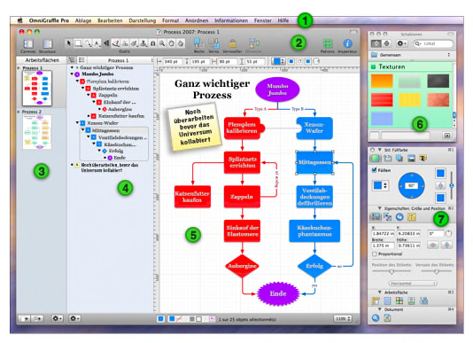

Einführung in die Oberfläche

 Die Menüleiste. Ebenso wie in jeder Mac OS X-Anwendung können Sie hier auf alle Befehle zugreifen.
Die Menüleiste. Ebenso wie in jeder Mac OS X-Anwendung können Sie hier auf alle Befehle zugreifen.  Die Symbolleiste bietet einfachen Zugriff auf die gewünschten Steuerungen. Wählen SieSymbolleiste anpassen aus dem Menü Darstellung, um die Symbole auf der Symbolleiste nach Wunsch anzupassen. In der Symbolleiste befindet sich auch die Werkzeugpalette, die Sie zum Erstellen von Diagrammen verwenden. Sie können die Symbolleiste mithilfe der weißen Taste rechts neben der Titelleiste ein- und ausblenden.
Die Symbolleiste bietet einfachen Zugriff auf die gewünschten Steuerungen. Wählen SieSymbolleiste anpassen aus dem Menü Darstellung, um die Symbole auf der Symbolleiste nach Wunsch anzupassen. In der Symbolleiste befindet sich auch die Werkzeugpalette, die Sie zum Erstellen von Diagrammen verwenden. Sie können die Symbolleiste mithilfe der weißen Taste rechts neben der Titelleiste ein- und ausblenden.  Auf der Arbeitsflächen-Seitenleiste werden alle Arbeitsflächen in Ihrem Dokument und die darin enthaltenen Ebenen angezeigt. Sie können auf eine Arbeitsfläche klicken, um diese in der Haupt-Arbeitsflächenansicht zu bearbeiten.
Auf der Arbeitsflächen-Seitenleiste werden alle Arbeitsflächen in Ihrem Dokument und die darin enthaltenen Ebenen angezeigt. Sie können auf eine Arbeitsfläche klicken, um diese in der Haupt-Arbeitsflächenansicht zu bearbeiten.  In der Gliederungs-Seitenleiste erhalten Sie eine hierarchische, textbasierte Ansicht des Diagramms in der ausgewählten Arbeitsfläche. Dies bietet eine hervorragende Möglichkeit, sehr viele Objekte auf einmal zu erstellen, sie miteinander zu verknüpfen und neu anzuordnen. Sie können auch zur Listen-Seitenleiste wechseln, in der die Anordnung jedes Objekts auf jeder Ebene der ausgewählten Arbeitsfläche von vorne nach hinten angezeigt wird.
In der Gliederungs-Seitenleiste erhalten Sie eine hierarchische, textbasierte Ansicht des Diagramms in der ausgewählten Arbeitsfläche. Dies bietet eine hervorragende Möglichkeit, sehr viele Objekte auf einmal zu erstellen, sie miteinander zu verknüpfen und neu anzuordnen. Sie können auch zur Listen-Seitenleiste wechseln, in der die Anordnung jedes Objekts auf jeder Ebene der ausgewählten Arbeitsfläche von vorne nach hinten angezeigt wird.  In der Arbeitsflächenansicht finden die eigentlichen Zeichenvorgänge statt. Sie können mithilfe der Zeichenwerkzeuge Formen erstellen und diese mittels Linien verknüpfen. Sie können Objekte bewegen und gruppieren, Tabellen erstellen und zahlreiche andere Funktionen ausführen.
In der Arbeitsflächenansicht finden die eigentlichen Zeichenvorgänge statt. Sie können mithilfe der Zeichenwerkzeuge Formen erstellen und diese mittels Linien verknüpfen. Sie können Objekte bewegen und gruppieren, Tabellen erstellen und zahlreiche andere Funktionen ausführen.  Das Schablonenfenster enthält zahlreiche vorgefertigte Objekte für die unterschiedlichsten Zwecke. OmniGraffle enthält standardmäßig bereits sehr viele praktische Schablonen. Sie können außerdem in Graffletopia suchen, einer hervorragenden Drittanbieter-Bibliothek mit Schablonen, die von OmniGraffle-Benutzern erstellt wurden.
Das Schablonenfenster enthält zahlreiche vorgefertigte Objekte für die unterschiedlichsten Zwecke. OmniGraffle enthält standardmäßig bereits sehr viele praktische Schablonen. Sie können außerdem in Graffletopia suchen, einer hervorragenden Drittanbieter-Bibliothek mit Schablonen, die von OmniGraffle-Benutzern erstellt wurden.  Die Informationsfenster enthalten alle Steuerungen, die Sie zur Änderung der ausgewählten Objekte auf der Arbeitsfläche, der Arbeitsfläche selbst und des gesamten Dokuments benötigen. Es stehen sechzehn verschiedene Informationsfenster zu Auswahl, die nach ihrem jeweiligen Verwendungszweck geordnet sind: Stil, Eigenschaften, Arbeitsfläche und Dokument.
Die Informationsfenster enthalten alle Steuerungen, die Sie zur Änderung der ausgewählten Objekte auf der Arbeitsfläche, der Arbeitsfläche selbst und des gesamten Dokuments benötigen. Es stehen sechzehn verschiedene Informationsfenster zu Auswahl, die nach ihrem jeweiligen Verwendungszweck geordnet sind: Stil, Eigenschaften, Arbeitsfläche und Dokument.